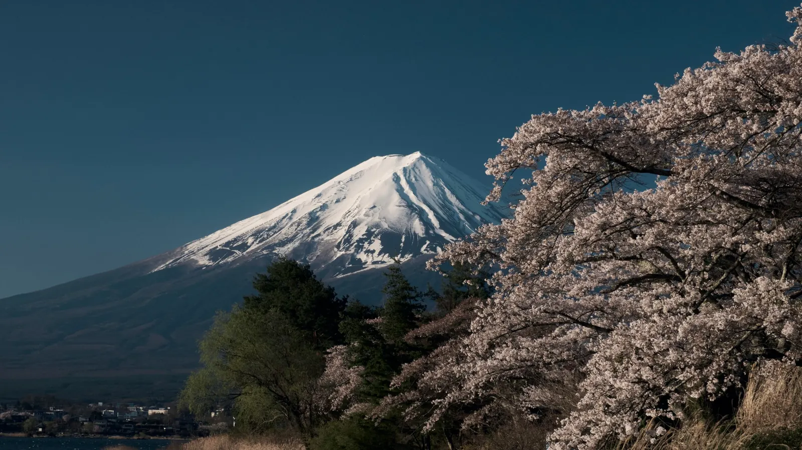

The short answer
The nationwide JR Pass pays off only if you make several long Shinkansen trips within its validity. A classic Tokyo → Kyoto/Osaka → Tokyo round trip on its own is usually cheaper with single tickets. Add Hiroshima, Kanazawa or northern Japan and the pass starts to make sense.
JR Pass prices from 1 October 2026
| Pass | Ordinary | Green (first class) | Child 6–11 (ordinary) |
|---|---|---|---|
| 7 days | ¥53,000 | ¥74,000 | ¥27,000 |
| 14 days | ¥84,000 | ¥116,000 | ¥42,000 |
| 21 days | ¥105,000 | ¥147,000 | ¥53,000 |
The days are consecutive: the 7-day pass runs for 7 calendar days from the date you start it, even if you stay in one city for three of them.
The quick math
- Write down every long train journey you will take in 7 (or 14) consecutive days.
- Look up the single-ticket price of each one (a Tokyo – Kyoto Shinkansen is roughly ¥14,000 each way with a reserved seat).
- Add them up. If the total is clearly above ¥53,000, the 7-day pass wins. If it is close or below, buy single tickets.
| Typical first trip (7 days) | Single tickets, roughly | Verdict |
|---|---|---|
| Tokyo → Kyoto → Tokyo | about ¥28,000 | Single tickets |
| Tokyo → Kyoto → Hiroshima → Tokyo | about ¥50,000 | Close — almost even |
| Tokyo → Kanazawa → Kyoto → Hiroshima → Tokyo | well over ¥53,000 | JR Pass |
What the pass covers
- Most Shinkansen (bullet trains) and JR limited express, rapid and local trains across Japan.
- JR lines inside cities, like the Yamanote Line in Tokyo, and the Tokyo Monorail to Haneda Airport.
- The Narita Express from Narita Airport — useful on arrival day if you start the pass then.
- Free seat reservations.
It does not cover subways, private railways (like the Keisei Skyliner or Kintetsu) and most city buses — for those use an IC card. Read our Suica and PASMO guide.
Nozomi and Mizuho trains
The fastest Shinkansen, Nozomi and Mizuho, are not included in the base pass. You can ride them by paying a supplement, or take the slightly slower Hikari and Sakura trains at no extra cost. Between Tokyo and Kyoto the difference is only about 20–30 minutes. More in our Shinkansen guide.
Cheaper alternatives
- Single Shinkansen tickets bought online or at the station — the best choice for one or two long trips.
- Regional JR passes (for example for Kansai, Hokuriku or the Tokyo area) — much cheaper if you stay in one region.
- Domestic flights for very long jumps, like Tokyo – Sapporo or Tokyo – Fukuoka.
Tips that save money
- Start the pass on the day of your first long trip, not on arrival day if you will stay in Tokyo for a few days.
- Plan the long trips inside the 7 days and use an IC card for the rest.
- Buy from the official JR Pass website or an authorized seller and keep your passport with you: you need it to use the pass.
Ready to book?
Affiliate links: if you book, 687 may earn a commission at no extra cost to you.
Plan the route first, then decide on the pass.
In 687 Japan each stage of your trip shows the right station, the transit route in Apple Maps and a ticket search ready with your date — so you can see your long journeys at a glance and do the JR Pass math in minutes. When delays or closures hit, NOW rebuilds the rest of your day.